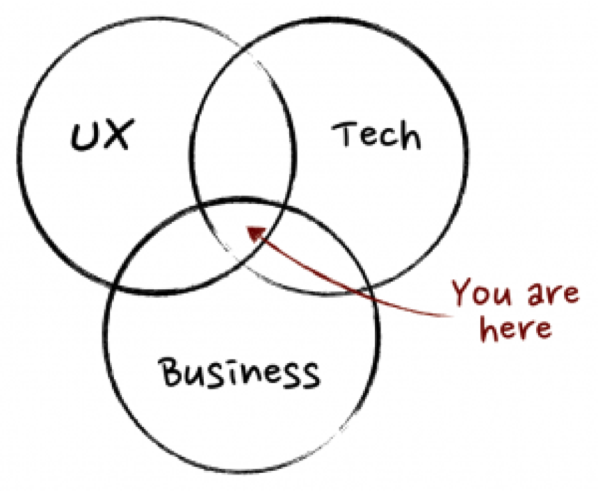
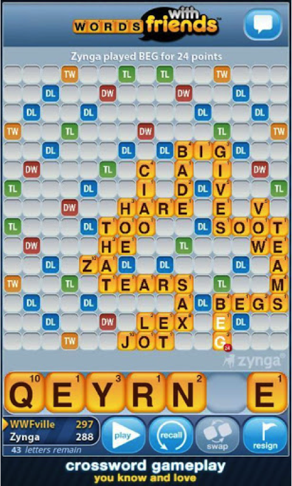
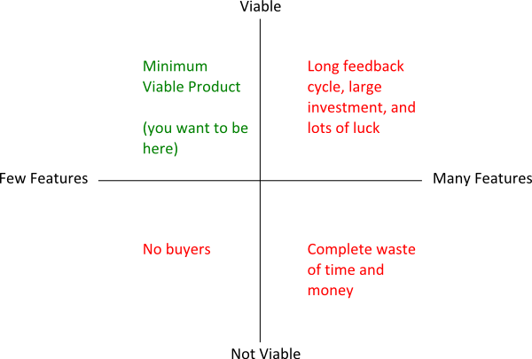
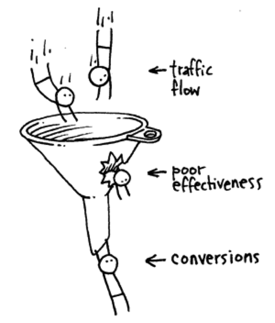
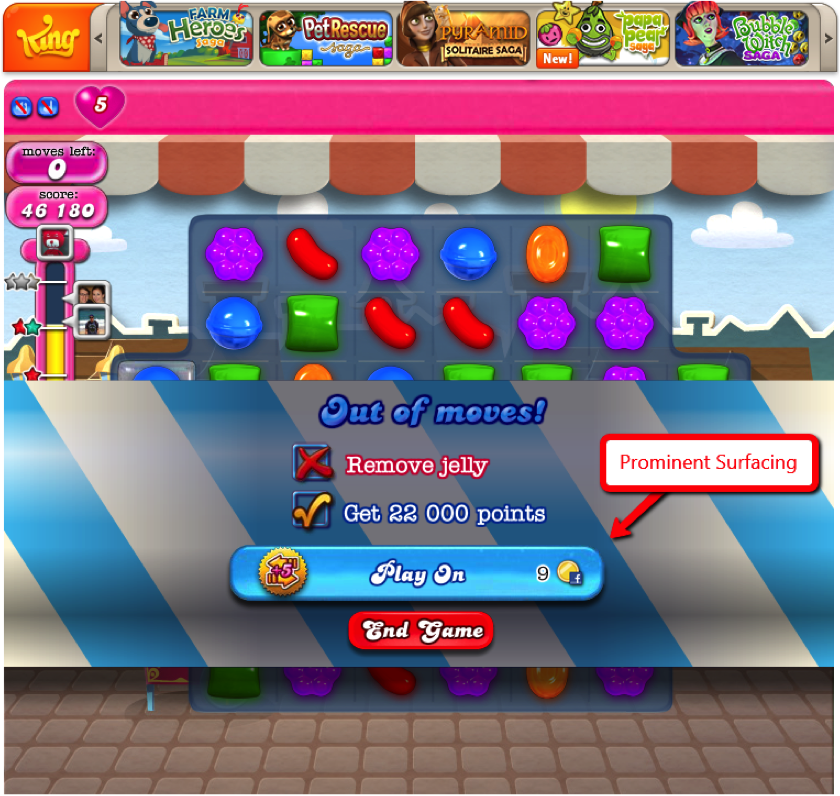
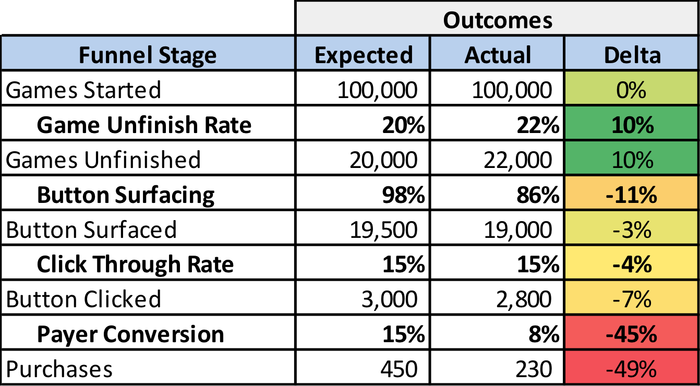

Essential Tactics for Product Management in Gaming
Paul Chong
Senior Product Manager, Zynga
November 18, 2013
Agenda
- Introductions
- What is Product Management in Gaming?
- What do Gaming PMs actually do?
- PM Interview Tips
- Session Q&A
Introductions...
- Product Manager at Zynga
- Focused on Monetization and Growth
- Non-Technical Background - management consulting and finance
What about you?
- Your Name
- What you do
- One thing you hope to get out of this class
What is Product Management?
- “to discover a product that is valuable, usable and feasible” – Marty Cagan
User Experience
- Player Surveys
- Focus Groups
- In-Game Data
- Partner with Design and Community Teams on player insights
Tech
- Interact with engineering team
- Communicate feature roadmap
- Play test features
- Collaborate with Engineering Team on feature roadmap
Business
- Define key metrics
- Work with management to set quarterly targets
- Be accountable for results
- Consult with Marketing and Sales Teams on distribution
What Metrics do PMs Monitor?
- DAU (Daily Active Users)
- New Game Installs
- Player Retention
- Engagement
- Revenue (Gross vs Net)
Case Study: Monetization
-
Monetization Dependencies:
- Players' Core Compulsion
- Game Genre
- Game Core Loop
- Create a Monetization Strategy
Activity:
What Do PMs Actually Do?
-
Lead the product development lifecycle and implementation
- Plan
- Build
- Test
- Launch
- Analyze
1. PLAN
Product Plan and Roadmap is set by the PM
- “Picasso had a saying – ‘good artists copy, great artists steal’ – and we have always been shameless about stealing great ideas.” - Steve Jobs
- Product ideation and concept development is drawn from unmet user needs
- Product spec outlines how the product will function and look
- Business case forecasts expected outcomes of product
Case Study: Game Concepts
-
Develop a Game Concept:
- Define Game Genre/Competitor Games
- Target Demographic
- Game Core Loop
- Monetization Model
2. BUILD
Product Development has increasingly tended towards Agile
- Agile espouses the development of products through iterative and incremental improvements
- PM responsible for defining minimum product requirements
Case Study: MVP
-
Minimum Viable Product:
- Distributed to customers
- Validate Learning
- Minimum Effort
- Design an MVP for WWF
Activity:
3. TEST
Learning can be accelerated through testing and experimentation
- A/B tests draw statistically significant design decisions
- Key to a good A/B Test is in its design (unbiased flow groups, meaningful variants)
Case Study: A/B Testing
-
Objective:
- Develop experiments to optimize a central feature in your game
- Game feature being tested
- Test Variants descriptions
- Metric used to determine winning variant
Activity:
4. LAUNCH
Distribution is a crucial determinant of whether or not a product succeeds
- Product distribution is one of Peter Thiel’s three startup ‘Secrets’
- Distribution is all about surfacing: how do you get your product in front of your target audience?
- Good PMs are also competent growth hackers!
Case Study: Distribution
-
Objective:
- Develop a distribution strategy for your game
- App Rankings
- Organic/Paid Search
- Referrals/WoM
- Viral Channels
- Paid Acquisition
Define the Targeted Distribution Channels:
5. ANALYZE
PMs are responsible for closing the feedback loop after product launch
- Results delivered by product are quantified, compared to original business case
- Analysis presented in terms of a funnel [see next slide]
- Best lessons often drawn from under performing features
Funnel Idea
Case Study: Funnel Analysis
 How to land a position as a Gaming PM
-
Getting an interview
- Network (WoM referrals strongest way to land an interview)
- Play games and learn about developments in gaming industry
-
Preparing a Resume
- State what you play in your resume - Studios love applicants who play their games
- Craft a coherent story connecting your previous experiences
-
The interview
- Be cognizant of what qualities Studio is looking for: analytical, creative, good product sense, and personable
Snippets of Lovely Code
A few lines from the highlight reel
var Restaurant = {
toggleLogin: function(e) {
e.preventDefault()
$(".restaurant-login").slideToggle("slideDown")
},
showRegister: function(e, registerPage) {
$("#container").addClass("hidden").html(registerPage)
$("#container").slideDown()
}
}
Guest Session Key
// url
/restaurants/1/reservations/1?guest=unique_key
// reservation.rb (model)
before_create :generate_unique_key
def generate_unique_key
self.unique_key = SecureRandom.hex(10)
end
// application_controller.rb (helper methods)
def guest_access
reservation = Reservation.find(params[:id])
guest_key == reservation.unique_key
end
def guest_key
params[:guest]
end
// reservations_controller.rb (guest view)
before_filter :authenticate_guest, :only => [:show]
private
def authenticate_guest
redirect_to root_path unless guest_access
end
// bitly_helper.rb
bitly.shorten('http://noreservations.herokuapp.com/restaurants/'+restaurant_id+'/reservations/'+id+'?guest='+unique).short_url
THIS THAT
var Message = {
sendTextTableReady: function(reservationId){
var that = this
$.ajax({
url: "/messages",
type: "post",
data: {id: reservationId},
data_type: "json"
}).done(function(){
$(that).removeClass("message-ready")
$(that).html("sent")
$(that).addClass("ready-message-sent")
$("error-message").empty()
}).error(function(){
$("error-message").text("SMS failed :(")
})
},
SMSButtonEvent: function(){
var self = this;
$(".table-body").on("click", "div.message-ready", function(){
var reservationId = $(this).closest(".reservation").data("id")
var boundSendTextTableReady = self.sendTextTableReady.bind(this)
boundSendTextTableReady(reservationId)
})
}
}
$(document).ready(function(){
Message.SMSButtonEvent();
})
Before Refactoring
var updateStatusId = function(data) {
var statusText = data.status;
if (statusText == 'Waiting') {
var statusId = 'status-waiting';
} else if (statusText == 'Cancelled') {
statusId = 'status-cancelled';
} else if (statusText == 'No-Show') {
statusId = 'status-no-show';
} else if (statusText == 'Seated') {
statusId = 'status-seated';
}
return statusId;
}
// AJAX done.
var statusId = updateStatusId(data);
$that.closest(".reservation").find("span.status").removeAttr('id').attr('id', statusId);
After Refactoring
// AJAX done.
$that.closest(".reservation").find("span.status").removeAttr('id').attr('id', data.status);
Lessons Learned
- Team Dynamics
- Clean Master
- Tests and Coverage
Questions?
the end
Transition Styles
You can select from different transitions, like:
Cube -
Page -
Concave -
Zoom -
Linear -
Fade -
None -
Default
Themes
Reveal.js comes with a few themes built in:
Default -
Sky -
Beige -
Simple -
Serif -
Night
Moon -
Simple -
Solarized
* Theme demos are loaded after the presentation which leads to flicker. In production you should load your theme in the <head> using a <link>.
Global State
Set data-state="something" on a slide and "something"
will be added as a class to the document element when the slide is open. This lets you
apply broader style changes, like switching the background.
Custom Events
Additionally custom events can be triggered on a per slide basis by binding to the data-state name.
Reveal.addEventListener( 'customevent', function() {
console.log( '"customevent" has fired' );
} );
Slide Backgrounds
Set data-background="#007777" on a slide to change the full page background to the given color. All CSS color formats are supported.
Image Backgrounds
<section data-background="image.png">Repeated Image Backgrounds
<section data-background="image.png" data-background-repeat="repeat" data-background-size="100px">Background Transitions
Pass reveal.js the backgroundTransition: 'slide' config argument to make backgrounds slide rather than fade.
Background Transition Override
You can override background transitions per slide by using data-background-transition="slide".
Clever Quotes
These guys come in two forms, inline:
“The nice thing about standards is that there are so many to choose from”
and block:
“For years there has been a theory that millions of monkeys typing at random on millions of typewriters would reproduce the entire works of Shakespeare. The Internet has proven this theory to be untrue.”
Pretty Code
function linkify( selector ) {
if( supports3DTransforms ) {
var nodes = document.querySelectorAll( selector );
for( var i = 0, len = nodes.length; i < len; i++ ) {
var node = nodes[i];
if( !node.className ) {
node.className += ' roll';
}
}
}
}
Courtesy of highlight.js.
Intergalactic Interconnections
You can link between slides internally, like this.
Fragmented Views
Hit the next arrow...
... to step through ...
any type- of view
- fragments
Fragment Styles
There's a few styles of fragments, like:
grow
shrink
roll-in
fade-out
highlight-red
highlight-green
highlight-blue
Spectacular image!

Export to PDF
Presentations can be exported to PDF, below is an example that's been uploaded to SlideShare.
Take a Moment
Press b or period on your keyboard to enter the 'paused' mode. This mode is helpful when you want to take distracting slides off the screen during a presentation.